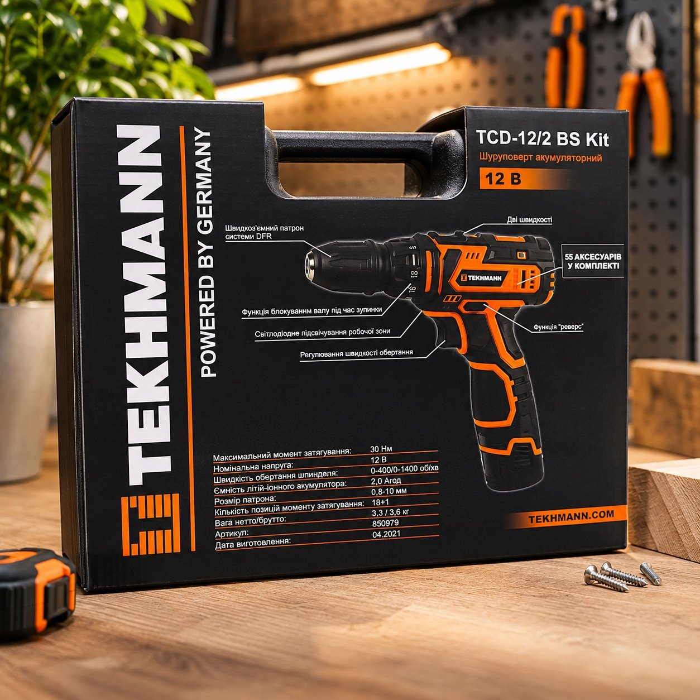

🔋
Два акумулятори
Дві батареї Li-ion ємністю 2,0 А·год кожна — можна чергувати їх під час роботи.
Акумуляторний дриль-шуруповерт Tekhmann TCD-12/2 BS Kit — компактний інструмент із двома акумуляторами та набором із 55 аксесуарів.

Основні функції, які допомагають виконувати типові роботи вдома, у майстерні чи під час монтажу.
Дві батареї Li-ion ємністю 2,0 А·год кожна — можна чергувати їх під час роботи.
0–400 та 0–1400 об/хв для закручування кріплень і свердління.
18 положень регулювання крутного моменту та окремий режим свердління.
LED-підсвічування робочої зони та перемикання напрямку обертання.
Тут розмістимо твоє відеооглядове відео на 30–40 секунд із демонстрацією та поясненням переваг.
Характеристики моделі Tekhmann TCD-12/2 BS Kit.
У комплекті — сам шуруповерт, два акумулятори, зарядний пристрій і набір із 55 аксесуарів для різних завдань.

Реальні фото комплекту, інструмента та аксесуарів.


Добірка відгуків про модель Tekhmann TCD-12/2 BS Kit. Оновлено: 10.2026.
«Придбав цей шуруповерт для роботи по ремонту, і я ним дуже задоволений. Хороший крутний момент, довго тримає заряд, а комплект з двома батареями дуже зручний».
«Цей акумуляторний шуруповерт став моїм надійним помічником у роботі. Легко замінюються насадки, відмінно працює з різними матеріалами».
«Шуруповерт Tekhmann TCD-12/2 BS Kit – це саме те, що потрібно для дому! Легкий, потужний і зручний у використанні».
«Відмінний шуруповерт! Прекрасно підходить для дрібних ремонтних робіт вдома і на дачі. В комплекті йде зручний кейс».
«Чудовий шуруповерт для будівництва та ремонтних робіт. Легкий, зручний, працює без проблем навіть на важких матеріалах».
Залиш контактні дані — узгодимо замовлення та спосіб доставки.
У комплекті два літій-іонні акумулятори напругою 12 В та ємністю 2,0 А·год кожен. Їх можна чергувати під час роботи.
Повне заряджання одного акумулятора триває орієнтовно 1,5 години. Фактичний час може залежати від рівня заряду та умов використання.
Шуруповерт Tekhmann TCD-12/2 BS Kit, два акумулятори, зарядний пристрій, набір із 55 аксесуарів, пластиковий кейс, інструкція та гарантійний талон.
Модель призначена для закручування кріплень і свердління. Вона має дві швидкості та окремий режим свердління.
Так. Передбачено дві швидкості обертання — 0–400 та 0–1400 об/хв, а також перемикання напрямку обертання (реверс).
Максимальний крутний момент моделі — 30 Н·м. Також є 18 положень регулювання крутного моменту та окремий режим свердління.
Швидкозатискний патрон розрахований на оснащення діаметром від 0,8 до 10 мм.
Доставка доступна Новою поштою або Укрпоштою. Спосіб оплати та можливість післяплати узгоджуються під час підтвердження замовлення. Онлайн-оплата карткою з'явиться після підключення платіжного сервісу.
Для цієї моделі вказана гарантія 36 місяців. Остаточні умови перевіряйте в гарантійному талоні, що входить до комплекту.